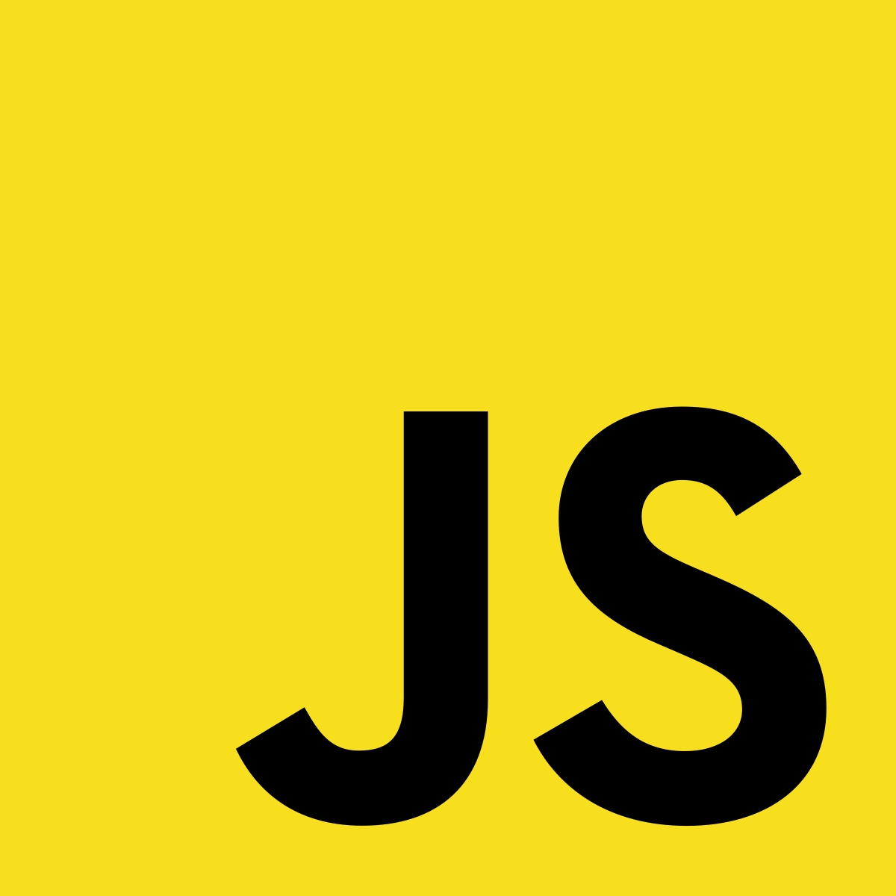
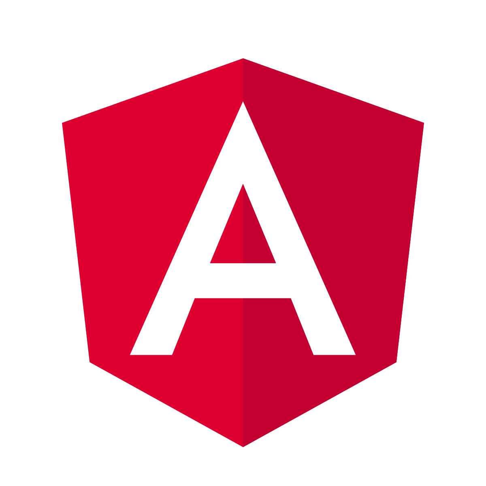

habilidades

Javascipt

Nodejs

Angular

React

Git

Html

css

Mysql

Hola, mi nombre es Ivan Arley Guerrero Sanchez y soy un desarrollador full stack. Aunque poseo poca experiencia profesional en el campo, es mi sueño trabajar en el ámbito de la tecnología. Me gusta aprender nuevas cosas y me apasionan temas de tecnología y inteligencia artificial. Soy autodidacta, carismático, responsable y empático. Estoy comprometido con mi trabajo y me esfuerzo por encontrar soluciones innovadoras para los problemas con los que me enfrento. spero poder aportar a los proyectos en los que me involucro.